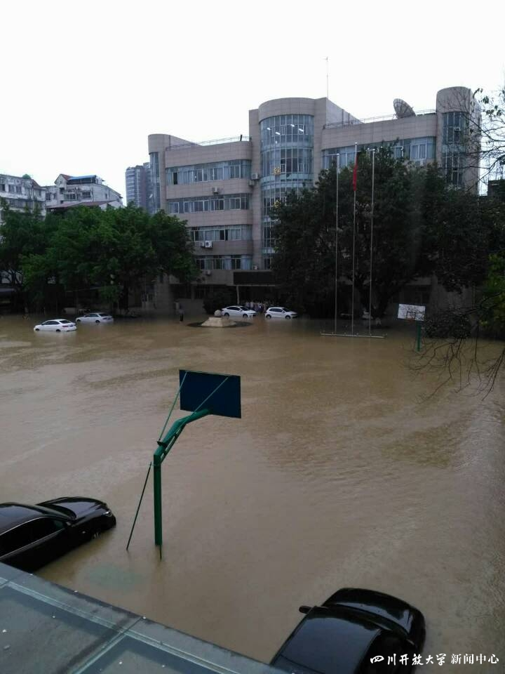
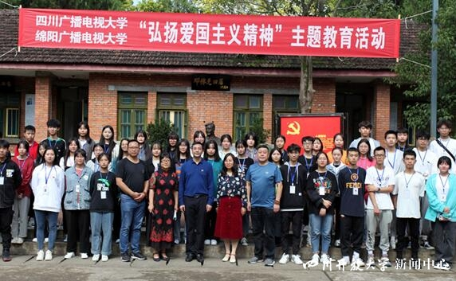
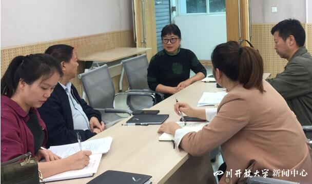
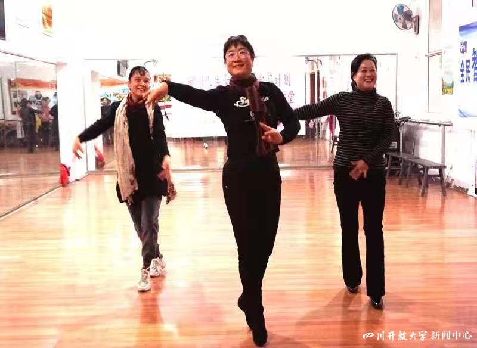

日前，泰州市广播电视大学姚卫、邓贤明被评为国家开放大学师德标兵，杨戴萍、余梦涛、李玉波、李悦被评为国家开放大学师德先进个人。这6位师德标兵、师德先进个人长期扎根在教学一线，恪守教育初心，潜心教书育人，爱岗敬业，默默奉献，用实际行动诠释了高尚师德的丰富内涵，展现了泰州市广播电视大学教师的风采。
学校人事处联合宣传部在学校网站、微博微信推出6位老师先进事迹的系列报道，今日推出第一篇《姚卫：凝心铸魂强党性 立德树人写春秋》。
姚卫：凝心铸魂强党性 立德树人写春秋
姚卫，女，汉族，1966年8月生于江苏省兴文县，中共党员，硕士，绵阳广播电视大学思政课教授，从事教学一线工作32年，为人师表、教书育人，用一颗赤诚之心去实践教育理想，全身心地奉献给教育事业。被评为江苏省优秀教师，并当选绵阳市第六次党代会代表。
对党忠诚，争当先锋
姚卫热爱电大教育事业，不忘初心、敢于担当，在党员示范岗上，充分发挥了共产党员的带头示范作用。
2017年7月11日，绵阳遭遇70年来最大暴雨、洪水的袭击。绵阳城区出现多处积水，绵阳电大校园后面的安昌河超警戒水位近2米，水位还在继续上涨，街上车辆已经不能通行。姚卫带领电工迅速赶到已经进水的社区教育大楼的地下高压配电室，果断要求电工关闭所有的电闸。这时校园里积水已经达到成人男子的腰部，人已经无法出入社区教育大楼。从早上到傍晚，她一个人饿着肚子坚守在社区教育大楼里，密切关注着地下室水情，把情况及时向值守的书记、校长汇报，直到傍晚水退了一点，她才得以走出社区教育大楼。

图1：被淹的绵阳电大校园
2020年初，正值新冠肺炎疫情爆发时期，作为党支部书记的姚卫立刻成立了支部党员志愿者服务队，冒着风险，带头及时分批次将学校购买的口罩、84消毒液和酒精，一家家一户户的送到退休教职工和科室成员居住的小区门口，把党组织的温暖及时送到教职工的心坎上；同时还积极主动配合社区工作人员逐户摸底排查，做好24小时值班工作，并通过微信和QQ群宣传疫情防控知识，为打赢疫情防控阻击战发挥了作用。
爱岗敬业，立德树人
姚卫2003年到电大工作以来，全身心扑在开放教育事业上。她不仅长期承担了《中国特色社会主义理论体系概论》《思想道德修养与法律基础》和《马克思主义原理概论》的面授辅导工作，同时又承担了《政治经济学》等10门网上课程的辅导工作。姚卫老师具有学前教育、计算机管理、政治教育、行政管理等专业学历背景，知识全面，综合能力强，她的教学能结合成人学生实际，示例鲜活感人、语言通俗易懂、表情生动、声情并茂，深受学生的喜爱。
学生陈元认为课程《马克思主义原理概论》中的概念和原理很抽象，离自己生活远，对自己没什么用处。听了姚卫的面授辅导课以后才知道学习这门课程非常有用，能指导自己的生活和工作。许多最初和陈元有一样想法的学生，在过去他们遇到挫折时总是灰心丧气。学习了《马克思主义原理概论》后，他们能够乐观面对生活和学习中困难和失败，有了战胜困难的勇气和信心。

图2：开展教研活动
姚卫积极参加江苏电大系统内组建的思政课教学团队开展的集体教研活动。多次组织师生在梓潼“两弹城”和“绵阳市南山烈士陵园”实践教学基地开展“弘扬爱国主义精神”主题教育实践活动。2020年参加了国家开放大学首届思想政治理论课教学展示活动，参与了江苏广播电视大学《思想道德修养与法律基础》课程教学团队《在实现中国梦的实践中谱写新时代的青春之歌》的教学设计，结合自己多年的体验式教学实践，通过创设情景体验，让思政课“活”起来，提高思政课实效性，该教学设计获得展示活动二等奖。
亦师亦友，关爱学生
姚卫把学生当成自己的亲人。她会把每一个学生的家庭状况都摸排一遍，了解学生的家庭和身体健康情况。对家庭困难的学生，她送新衣服、送新毛巾、新书包，甚至送新的床上用品。

图3：与学生交流
姚卫不仅在生活上关心学生，在学习中，也善于帮助学生解决学习中遇到的困难和问题。在辅导学生学习《行政领导学》课程时，发现学生常常把“领导”和“管理”两个概念混淆，往往忽略了这两种行为在功用和形式上的差异。姚卫利用周末和节假日，设计和制作了风趣幽默的《诸葛亮和丙吉谁做了丞相该做的事情？——领导和管理的区别》微课。学生使用后，轻轻松松就掌握了该知识点，在考试中在这个知识点上均没有丢分。此外，姚卫常常利用寒暑假，在办公室里对要写作毕业论文的学生进行一对一辅导。这些学生之前都没有写过论文，如果单纯用传统学位论文写作方法进行辅导是行不通的。姚卫根据自己多年辅导学生论文写作积累的经验，创新方法，让学生非常容易地掌握了学位论文的写作方法，写出了合格的学位论文。
热心公益，回馈社会
服务社会、服务社区是电大作为一所开放型高等学校的职责所在。长期以来，姚卫把热心公益事业的着眼点瞄准了社区，把所学知识主动回馈社会。
针对社区不少的职业女性和中老年女性朋友饱受各种慢性病的困扰，姚卫结合自身健身的成功体验，发挥舞蹈的特长，帮助女性朋友强身健体，愉悦身心，减轻或摆脱其身心疾病。在绵阳社区大学，姚卫开办了《舞蹈与生命科学》基础班，通过舞蹈促进职业女性和中老年女性朋友在心理和生理上的健康。该课程受到广大社区学员的好评，得到了各级领导的关心和重视，该课程被列入绵阳市妇联2020年“精彩人生女性终身学习计划”中。

图4：姚卫在社区指导舞蹈
规范管理 成效突出
姚卫在电大的工作，是从开放教育课程管理员做起的。她把管理育人与服务育人紧密结合起来，担任了开放教育五个专业的课程管理工作。面对繁杂的工作，她事必躬亲，用亲自抓、抓细、抓落实的工作方法，各项工作有条不紊，没有出现过任何差错。
针对电大学生实际，注重日常对学生技能的培训和培养。组织学生参加江苏电大第五届至第七届“电大杯”专业技能竞赛，均荣获团体一等奖。姚卫老师所在的绵阳电大4次获得全省电大教学管理工作一等奖。姚卫老师个人荣获4次全省电大教学及教学管理先进个人。2019年被她还被国家开放大学评为教务工作优秀个人。
注重科研、示范引领
姚卫把工作和学习中的所得、所思、所想，用文字记录下来。出版了1部专著，主编了2部高校教材、1部社区教育教材、1部教师培训教材，在《人民论坛》《中小学教师培训》《光明日报》理论版等刊物上发表论文40余篇。
多项科研成果获得江苏省教育厅、绵阳市委、市政府的表彰。在教学资源建设上成果突出，她设计和制作的课件《人类的朋友》和《色彩的冷暖》均荣获江苏省教育厅第一届和第二届优秀电教成果二等奖；设计和制作的课件、微课多次获国开大和江苏电大资源建设大赛奖项。
姚卫虽然是一位平凡的电大教师、普通党员，却在教书育人、管理育人和服务育人，面向社会方面，发挥了党员的先锋和育人的模范作用，做出了不平凡的成绩，深得师生和社会好评。（江苏开大人事处、宣传部 联合报道）
注：文中学生均为化名

欢迎关注电大小微